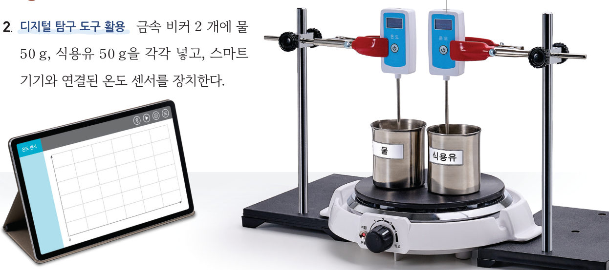
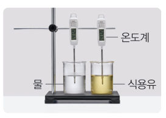
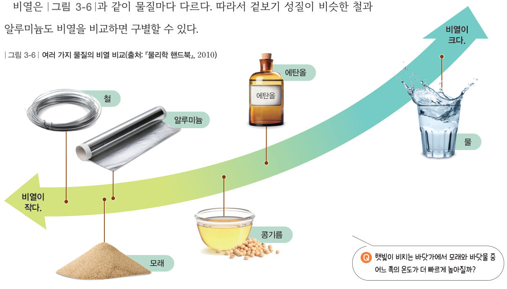
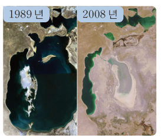
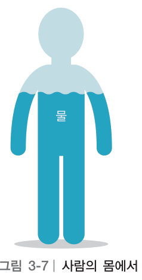
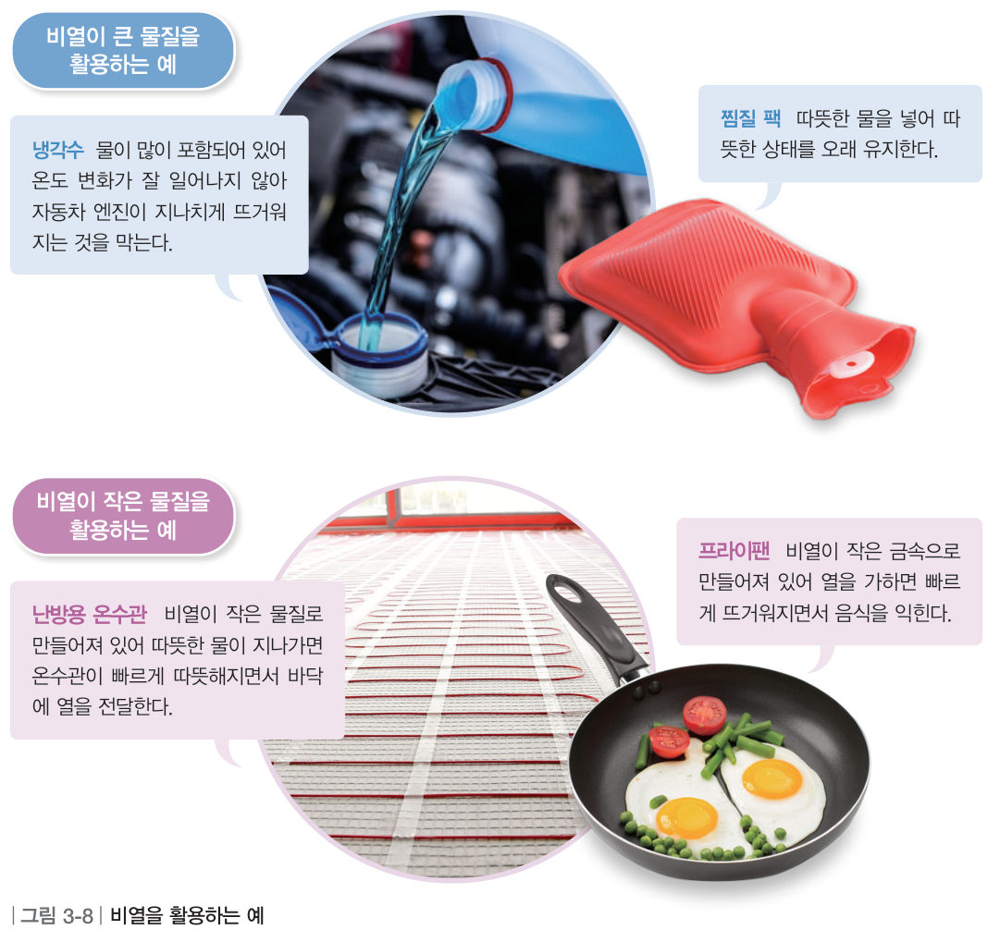
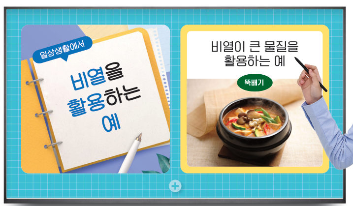

“난 이미 뜨거운데.” “물이 아직 미지근하네.” 냄비의 물을 가열할 때 냄비는 빠르게 뜨거워져도 물은 천천히 뜨거워진다. 가상 온도 센서로 물과 식용유를 가열해 보고, 물질마다 온도가 변하는 정도를 비교해 보자.
🎯 이 단원을 배우면 — 물질에 따라 비열이 다름을 설명하고, 일상생활에서 비열이 유용하게 활용됨을 알 수 있다.
대단원 열기두 번째 블록 질문 95쪽
저녁을 먹으려고 숯불에 고기를 굽고 있어. 활활 타오르는 불꽃을 보니 불판이 휘어져 다칠까 봐 걱정돼. 가져온 숯도 얼마 남지 않았어.
두 번째 블록
조리 시간과 안전을 고려하면 캠핑용 조리 도구는 어떤 성질이 있는 재료로 만들어야 할까?
‘비열과 우리 생활’(96쪽)과 ‘열팽창과 우리 생활’(100쪽)의 블록을 모으면 답할 수 있어요. 이 워크시트에서 첫 번째 힌트 블록을 찾아보자! 🧩
✓이미 알고 있는 것 — 온도가 높은 물체에서 낮은 물체로 열이 이동하여 을 이룬다. 온도가 높을수록 물질을 구성하는 입자 사이의 거리가 .
탐구온도 센서를 이용하여 여러 가지 액체의 비열 비교하기 96~97쪽
물질마다 온도가 변하는 정도는 어떠할까?

96쪽금속 비커 2개에 물 50 g, 식용유 50 g을 넣고 온도 센서를 장치한다.
어떻게 할까
실험을 시작하기 전에 안전 사항을 확인한다.
디지털 탐구 도구 활용 금속 비커 2개에 물 50 g, 식용유 50 g을 각각 넣고, 스마트 기기와 연결된 온도 센서를 장치한다. (온도 센서의 끝 부분이 금속 비커의 바닥에 닿지 않도록 주의한다.)
자료 수집 온도 측정 앱을 실행한 뒤 5분 동안 비커를 가열하면서 물과 식용유의 온도를 측정하고, 앱에 나타난 시간–온도 그래프를 확인한다.
⚠️ 보안경, 내열 장갑, 실험복 등 안전 장구를 갖추고, 소화기의 위치를 미리 확인한다. 액체를 너무 빠르게 가열하지 않도록 주의한다. 가열 장치 표면과 금속 비커가 뜨거우므로 화상을 입지 않도록 주의한다.
3D 가상 실험가상 가열 장치와 온도 센서
두 비커에 같은 세기의 열이 가해져요. 액체의 종류와 양을 바꾸고 [가열 시작]을 눌러 5분 동안의 온도 변화를 측정해 보자. 냉각 모드는 ‘다르게 해 보기’ 실험이에요 — 50 ℃로 데운 두 비커를 꺼내 식혀요.
가열 장치 3D · 드래그하여 돌리기
시간0:00
🔴 비커 A-
🔵 비커 B-
가열을 시작해 보세요. 두 비커에는 매 순간 같은 양의 열이 들어가요.
정리해 볼까
1자료 비교·분석 같은 시간 동안 온도 변화가 더 큰 물질은 이다.
2자료 해석 같은 온도만큼 높이는 데 필요한 열의 양은 어느 쪽이 더 많은지 그래프를 근거로 설명해 보자.
3변인 통제 물의 질량을 50 g에서 100 g으로 늘려 같은 세기로 가열하면 5분 동안의 온도 변화는 약 . 따라서 두 액체를 비교할 때는 을/를 같게 해야 한다.
다르게 해 보기 · 냉각할 때 액체의 온도 변화 비교하기

① 따뜻한 물이 든 수조에 같은 양의 물과 식용유가 든 비커 2개를 담가 온도가 같아지도록 한다. ② 비커를 수조에서 꺼낸 뒤, 1분 간격으로 물과 식용유의 온도를 측정한다. 👉 위의 [❄️ 냉각 모드]로 해 볼 수 있어요.
같은 시간 동안 냉각할 때 온도 변화가 더 큰 물질은 이다.
교과서비열 97쪽
같은 양의 물질에 같은 양의 열을 가해도 어떤 물질은 온도가 잘 변하지만 어떤 물질은 온도가 잘 변하지 않는다. 이는 물질의 종류에 따라 물질의 온도 변화에 필요한 ●열량이 다르기 때문이다. 어떤 물질 1 kg의 온도를 1 ℃ 높이는 데 필요한 열량을 비열이라고 한다.
비열은 그림 3-6과 같이 물질마다 다르다. 따라서 겉보기 성질이 비슷한 철과 알루미늄도 비열을 비교하면 구별할 수 있다.
●열량: 온도가 다른 물질 사이에서 이동하는 열의 양

그림 3-6여러 가지 물질의 비열 비교(출처: 『물리학 핸드북』, 2010)
움직이는 그림 3-6같은 열량을 가하면? — 온도계 경주
여섯 가지 물질 100 g씩에 같은 열량을 가해요. 열량을 조절하고 [열 가하기]를 눌러 온도계가 얼마나 올라가는지 비교해 보자. (처음 온도 20 ℃, 온도 변화 = 열량 ÷ (질량 × 비열))
1각 물질 100 g에 1 kcal씩 열량을 가했을 때 온도 변화가 가장 큰 물질은?
물질
알루미늄
콩기름
모래
에탄올
비열(kcal/(kg·℃))
0.21
0.47
0.19
0.57
— 이때 온도는 약 ℃ 올라간다.
2겉보기 성질이 비슷한 철과 알루미늄에 같은 열량을 가하면 온도 변화가 더 큰 것은 이다. 이처럼 비열은 물질을 구별하는 .
가상 실험햇빛이 비치는 바닷가에서 모래와 바닷물 중 어느 쪽의 온도가 더 빠르게 높아질까? 97쪽
하루 동안 햇빛을 받는 모래와 바닷물의 온도를 비교해 보자. 시간 막대를 움직이거나 [하루 재생]을 눌러 보자. 아래쪽 물의 양을 줄이면 아랄해처럼 호수가 말라 버린 지역이 돼요.
모래 일교차-
바닷물 일교차-
주변 지역 일교차-
1낮에 온도가 더 빠르게 높아지는 것은 이고, 그 까닭은 모래의 비열이 바닷물보다 때문이다.
더 알아보기 · 아랄해의 기후 변화와 비열

99쪽1989년 → 2008년
중앙아시아에 있는 아랄해는 매우 넓은 호수였지만 무분별한 개발로 급격하게 좁아졌다. 비열이 큰 호수의 물이 없어지자 아랄해 주변 지역은 낮과 밤의 온도 차이가 커지고, 비도 적게 내리면서 농사에 영향을 주었다. 이에 주변 국가들은 아랄해를 복원하려고 노력하고 있다.
2가상 실험에서 주변의 물을 100 %에서 10 %로 줄이면 주변 지역의 일교차는 .
교과서비열이 큰 물질과 작은 물질을 일상생활에 어떻게 활용할까? 98~99쪽

그림 3-7사람의 몸에서 물이 차지하는 비율
비열이 큰 물질일수록 같은 온도만큼 높이는 데 더 많은 열량이 필요하다. 특히 물은 비열이 커서 온도가 잘 변하지 않는다. 그림 3-7과 같이 사람의 몸에는 물이 많으며, 이는 체온을 일정하게 유지하는 데 도움을 준다.
우리 생활에서 온도를 유지해야 할 때는 비열이 큰 물질을, 온도를 빠르게 변하게 할 때는 비열이 작은 물질을 활용한다. 예를 들어 그림 3-8과 같이 자동차에 넣는 냉각수나 찜질 팩 안에 넣는 물에는 비열이 큰 물질을 활용한다. 반면 난방용 온수관이나 프라이팬에는 비열이 작은 물질을 활용한다.

그림 3-8비열을 활용하는 예 — 냉각수·찜질 팩(비열이 큰 물질), 난방용 온수관·프라이팬(비열이 작은 물질)
1비열이 작은 물질을 활용하는 예를 모두 골라 보자.
해 보기일상생활에서 물질의 비열을 활용하는 예 찾기 98쪽

98쪽●카드 뉴스: 전달하려는 내용을 간략한 글과 그림으로 만들어 보여 주는 카드 형태의 자료
어떻게 할까
일상생활에서 비열이 큰 물질이나 작은 물질을 활용하는 예를 모둠별로 찾고, 각각의 예에서 비열을 고려하여 유용한 점이 무엇인지 토의한다.
토의한 내용을 포함해 비열을 활용하는 예를 소개하는 카드 뉴스를 만든다.
모둠별로 만든 카드 뉴스를 공유 플랫폼에 올리고 발표한다.
2🧑🤝🧑 우리 모둠의 카드 뉴스 — 비열이 큰 물질과 작은 물질을 활용하는 예를 하나씩 쓰고 유용한 점을 설명해 보자.
스스로 확인하기96쪽 학습 목표를 달성했는지 확인해 보자 99쪽
1개념 확인 어떤 물질 1 kg의 온도를 1 ℃ 높이는 데 필요한 열량을 ( )(이)라고 한다.
2사고력 비열이 큰 그릇과 비열이 작은 그릇에 같은 양의 끓인 국을 각각 담았다. 시간에 따라 각 그릇의 온도 변화가 어떤 차이를 보일지 설명해 보자.
5분 테스트비열과 우리 생활
1온도가 다른 물질 사이에서 이동하는 열의 양을 이라고 한다.
2비열에 대한 설명으로 옳지 않은 것은?
3옳은 것은 O, 옳지 않은 것은 X를 골라 보자.
⑤ 해안 지역은 내륙 지역보다 일교차가 크다.
⑥ 사람의 체온은 외부 온도에 따라 잘 변한다.
⑦ 해안 지역에서 모래가 바닷물보다 온도가 더 빠르게 높아진다.
⑧ 비열이 큰 뚝배기는 데울 때까지 오래 걸리지만 잘 식지 않는다.
4 은/는 다른 물질에 비해 비열이 매우 커서 다양한 현상이 나타난다.
스스로 정리하기비열 · 두 번째 블록의 첫 조각 104쪽
1비열
(1) : 어떤 물질 1 kg의 온도를 1 ℃ 높이는 데 필요한 열량 (2) 비열과 물질의 온도 변화의 관계: 비열이 물질일수록 같은 온도만큼 높이는 데 더 많은 열량이 필요하다.
(3) 비열의 활용 • 비열이 물질을 활용하는 예: 냉각수, 찜질 팩 등 • 비열이 물질을 활용하는 예: 난방용 온수관, 프라이팬 등
🧩 두 번째 블록 · 힌트 조각 1 (99쪽)
비열이 ( ) 재료로 만든 조리 도구는 가열할 때 빠르게 뜨거워져 음식을 빠르게 조리할 수 있다. → 나머지 조각은 ‘열팽창과 우리 생활’에서!
제출학생 정보 · 제출하기
모든 활동을 마친 뒤 제출하면 전체가 한 번에 채점되고 피드백이 나타나요. 답안은 선생님 스프레드시트(중1 탭)에 기록돼요.